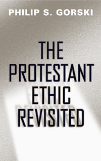

Essays on the contradictory resurgence of religion and liberalism in the twenty-first century by one of the most important voices in the study of the sociology of religion
Essays on the contradictory resurgence of religion and liberalism in the twenty-first century by one of the most important voices in the study of the sociology of religion


 Essays on the contradictory resurgence of religion and liberalism in the twenty-first century by one of the most important voices in the study of the sociology of religion
Essays on the contradictory resurgence of religion and liberalism in the twenty-first century by one of the most important voices in the study of the sociology of religion

|  |
The Protestant Ethic RevisitedPhilip S. Gorskipaper EAN: 978-1-43990-190-8 (ISBN: 1-4399-0190-2) |
"Gorski�s arguments are measured and persuasive, both historically and theoretically, and his chapters are judicious in their claims. The Protestant Ethic Revisited is a great book."
—Theodore Vial, Associate Professor of Theology at the Iliff School of Theology
In The Protestant Ethic Revisited, the historical sociologist Philip Gorski returns to the overarching theme that animated Max Weber's life work—namely, how the Christian West was reshaped by world-changing energies of the Calvinist movement. Gorski not only considers the perennial debate about religion and capitalism; he also devotes particular attention to the influence of Calvinism on the political development of the West—that is, the formation of strong states, the crystallization of national identities, the ignition of revolutions, and the advent of secularized politics.
The Protestant Ethic Revisited is a masterful new collection of Gorski's essays on religion and comparative historical sociology that includes both classic works and previously unpublished materials. Reflecting the aim of much of Gorski's work, this anthology reveals what we think of as fixed ideas about nationalism, secularism, politics, and religion in public life as either older-or less stable-concepts than previously thought.
Excerpt available at www.temple.edu/tempress
"An excellent set of essays, among which some are veritable classics. Gorski has established himself as one of the leading sociologists of his generation, and his essays in the sociology of religion have contributed greatly to his high international reputation. He has developed a wide-ranging comparative approach to religious sociology, not to mention some much-needed analytic sophistication, and has helped to reintegrate the area with already vibrant subfields such as historical and comparative sociology, political sociology, and sociological theory. The essays in The Protestant Ethic Revisited are important milestones in the recent transformation of the field. Gorski's work is no flash in the pan. It is enduringly valuable scholarship."
—Mustafa Emirbayer,Professor of Sociology at the University of Wisconsin�Madison
"[R]eligion, and especially ascetic Protestantism, was a very real difference maker in early modern European society. While most historians of the period need no persuading on this score, Gorski's book would be instructive to, for example, certain camps of sociologists that have overlooked religion in their calculations....The introduction [is] stimulating.'"
—The Sixteenth Century Journal
"[A] gracefully executed book. Its author, Philip S. Gorski, is one of the most important voices in the historical sociology of religion today.... [Gorski] demonstrates an ability to furnish smooth presentations of dense historical data and lucid accounts of complex social processes.... Not only are some of the essays by now 'veritable classics'...their juxtaposition heightens the sense that the attentive reader derives of Gorski's project and the skill with which he has pursued it."
—Sociology of Religion
Acknowledgments
Introduction: Beyond the Tilly Thesis: How States Did Not Make War and War Did Not Make States
Part I: Religion and Politics in Early Modern Europe
1. The Protestant Ethic Revisited: Disciplinary Revolution and State Formation in Holland and Prussia
2. Calvinism and Revolution: The Walzer Thesis Reconsidered
3. The Mosaic Moment: An Early Modernist Critique of Modernist Theories of Nationalism
4. The Making of Prussian Absolutism: Confessional Conflict and State Autonomy under the Great Elector, 1640�1688
5. The Little Divergence: The Protestant Reformation and Economic Hegemony in Early Modern Europe
Part II: The Secularization Debate
6. Historicizing the Secularization Debate: Church, State, and Society in Late Medieval and Early Modern Europe, circa 1300 to 1700
7. After Secularization? by Philip S. Gorski and Ates Altinordu
Conclusion: The Protestant Ethic and the Secular Modern
Index
Philip S. Gorski is Professor of Sociology and Religious Studies at Yale University, where he codirects the European and Russian Studies Program, the Center for Comparative Research, and the MacMillan Center Initiative on Religion, Politics, and Society. He is the author of The Disciplinary Revolution: Calvinism and the Rise of the State in Early Modern Europe, the coeditor of The Post-Secular in Question and the editor of Bourdieu and Historical Analysis.
Politics, History, and Social Change, edited by John C. Torpey.
This series will disseminate serious works that analyze the social changes that have transformed our world during the twentieth century and beyond. The main topics to be addressed include international migration; human rights; the political uses of history; the past and future of the nation-state; decolonization and the legacy of imperialism; and global inequality. The series will also translate into English outstanding works by scholars writing in other languages.
© 2015 Temple University. All Rights Reserved. This page: http://www.temple.edu/tempress/titles/2065_reg.html.